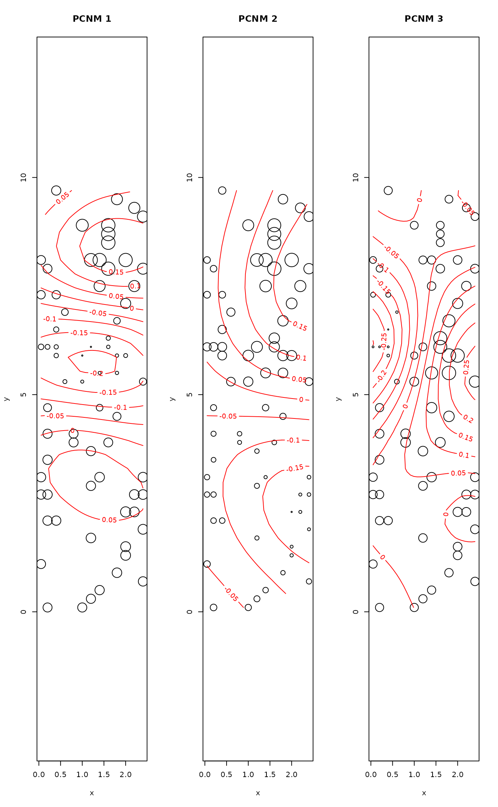
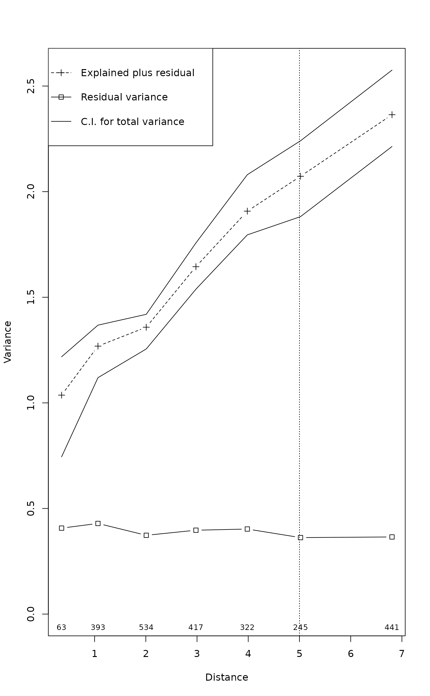

Principal Coordinates of Neighbourhood Matrix
pcnm.RdThis function computed classical PCNM by the principal coordinate analysis of a truncated distance matrix. These are commonly used to transform (spatial) distances to rectangular data that suitable for constrained ordination or regression.
Arguments
- dis
A distance matrix.
- threshold
A threshold value or truncation distance. If missing, minimum distance giving connected network will be used. This is found as the longest distance in the minimum spanning tree of
dis.- w
Prior weights for rows.
- dist.ret
Return the distances used to calculate the PCNMs.
Details
Principal Coordinates of Neighbourhood Matrix (PCNM) map distances between rows onto rectangular matrix on rows using a truncation threshold for long distances (Borcard & Legendre 2002). If original distances were Euclidean distances in two dimensions (like normal spatial distances), they could be mapped onto two dimensions if there is no truncation of distances. Because of truncation, there will be a higher number of principal coordinates. The selection of truncation distance has a huge influence on the PCNM vectors. The default is to use the longest distance to keep data connected. The distances above truncation threshold are given an arbitrary value of 4 times threshold. For regular data, the first PCNM vectors show a wide scale variation and later PCNM vectors show smaller scale variation (Borcard & Legendre 2002), but for irregular data the interpretation is not as clear.
The PCNM functions are used to express distances in rectangular form
that is similar to normal explanatory variables used in, e.g.,
constrained ordination (rda, cca and
capscale) or univariate regression (lm)
together with environmental variables (row weights should be supplied
with cca; see Examples). This is regarded as a more
powerful method than forcing rectangular environmental data into
distances and using them in partial mantel analysis
(mantel.partial) together with geographic distances
(Legendre et al. 2008, but see Tuomisto & Ruokolainen 2008).
The function is based on pcnm function in Dray's unreleased
spacemakeR package. The differences are that the current
function uses spantree as an internal support
function. The current function also can use prior weights for rows by
using weighted metric scaling of wcmdscale. The use of
row weights allows finding orthonormal PCNMs also for correspondence
analysis (e.g., cca).
Value
A list of the following elements:
- values
Eigenvalues obtained by the principal coordinates analysis.
- vectors
Eigenvectors obtained by the principal coordinates analysis. They are scaled to unit norm. The vectors can be extracted with
scoresfunction. The default is to return all PCNM vectors, but argumentchoicesselects the given vectors.- threshold
Truncation distance.
- dist
The distance matrix where values above
thresholdare replaced with arbitrary value of four times the threshold. String"pcnm"is added to themethodattribute, and new attributethresholdis added to the distances. This is returned only whendist.ret = TRUE.
References
Borcard D. and Legendre P. (2002) All-scale spatial analysis of ecological data by means of principal coordinates of neighbour matrices. Ecological Modelling 153, 51--68.
Legendre, P., Borcard, D and Peres-Neto, P. (2008) Analyzing or explaining beta diversity? Comment. Ecology 89, 3238--3244.
Tuomisto, H. & Ruokolainen, K. (2008) Analyzing or explaining beta diversity? A reply. Ecology 89, 3244--3256.
Examples
## Example from Borcard & Legendre (2002)
data(mite.xy)
pcnm1 <- pcnm(dist(mite.xy))
op <- par(mfrow=c(1,3))
## Map of PCNMs in the sample plot
ordisurf(mite.xy, scores(pcnm1, choi=1), bubble = 4, main = "PCNM 1")
#>
#> Family: gaussian
#> Link function: identity
#>
#> Formula:
#> y ~ s(x1, x2, k = 10, bs = "tp", fx = FALSE)
#>
#> Estimated degrees of freedom:
#> 8.71 total = 9.71
#>
#> REML score: 25.8026
ordisurf(mite.xy, scores(pcnm1, choi=2), bubble = 4, main = "PCNM 2")
#>
#> Family: gaussian
#> Link function: identity
#>
#> Formula:
#> y ~ s(x1, x2, k = 10, bs = "tp", fx = FALSE)
#>
#> Estimated degrees of freedom:
#> 7.18 total = 8.18
#>
#> REML score: 43.10693
ordisurf(mite.xy, scores(pcnm1, choi=3), bubble = 4, main = "PCNM 3")

#>
#> Family: gaussian
#> Link function: identity
#>
#> Formula:
#> y ~ s(x1, x2, k = 10, bs = "tp", fx = FALSE)
#>
#> Estimated degrees of freedom:
#> 8.32 total = 9.32
#>
#> REML score: 52.38255
par(op)
## Plot first PCNMs against each other
ordisplom(pcnm1, choices=1:4)

## Weighted PCNM for CCA
data(mite)
rs <- rowSums(mite)/sum(mite)
pcnmw <- pcnm(dist(mite.xy), w = rs)
ord <- cca(mite ~ scores(pcnmw))
## Multiscale ordination: residual variance should have no distance
## trend
msoplot(mso(ord, mite.xy))